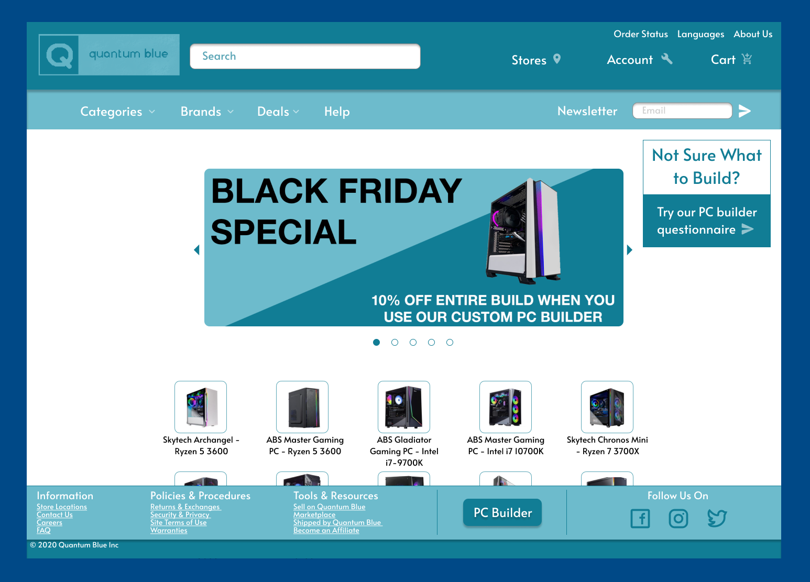
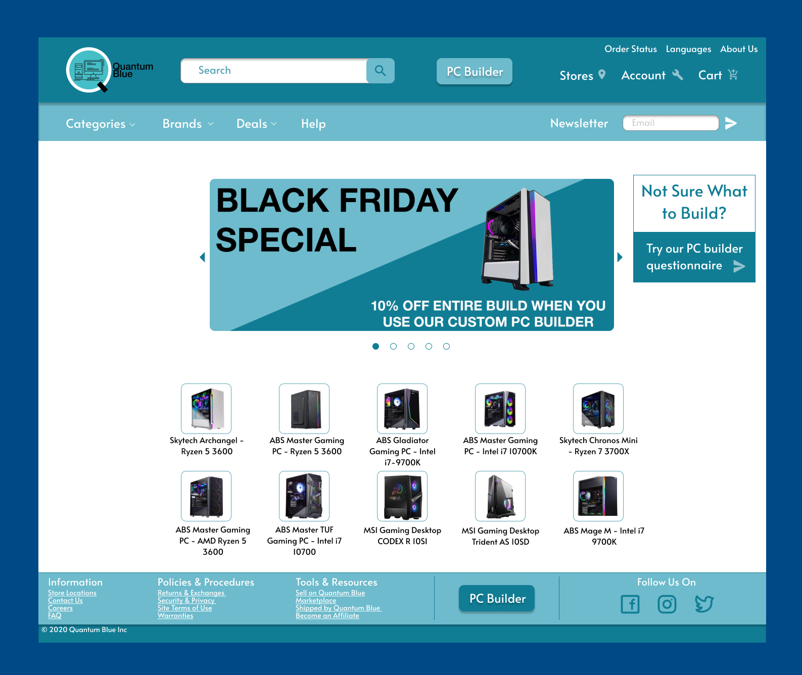
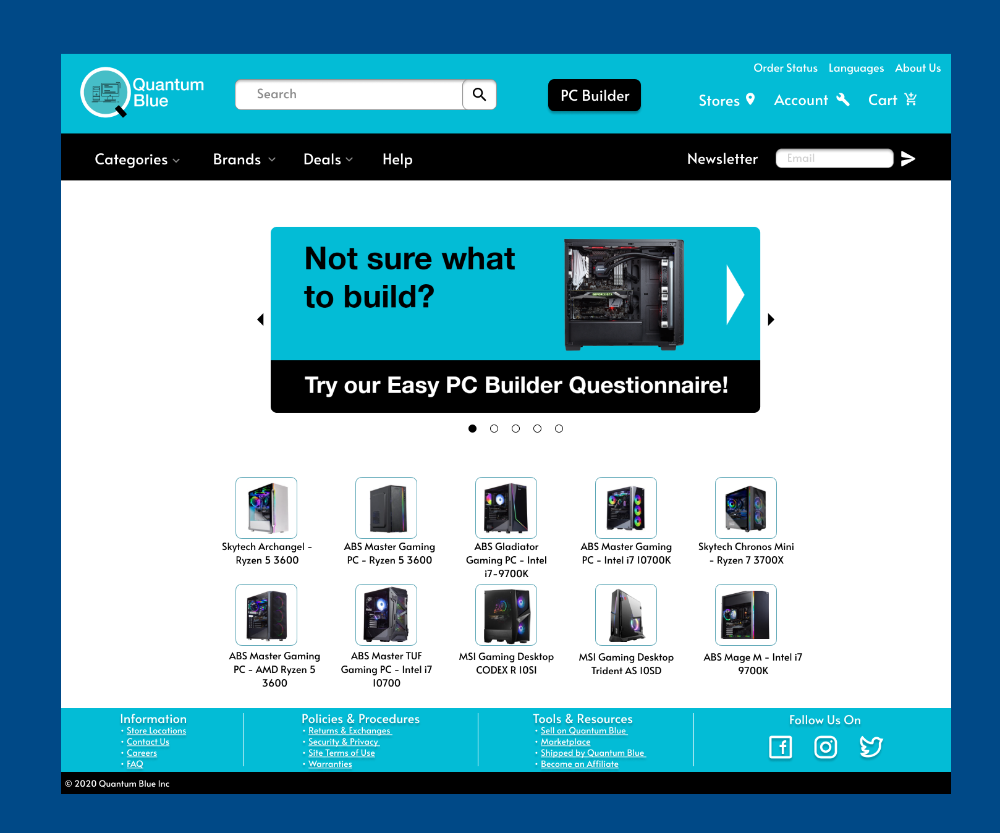

Quantum Blue
This focus of creating Quantum Blue was to sharpen Ui/UX skills. Aiming to create a site that is easily readable and accessible for all users.
The Design started off with rough idea of what the website should look like. Taking into consideration other mainstream computer providers such as newegg and memoryexpress.

When the first prototype was created accessibility became the next important factor to implement, after grading the accessibility of the prototype looking at specific aspects such as font size and contrasts a new version was created.

Finally it came to the finishing polishes of the website design. After multiple users ran through the figma prototype, we gain important feedback to improve the visuals of the site.

© 2024 Jesse Welk